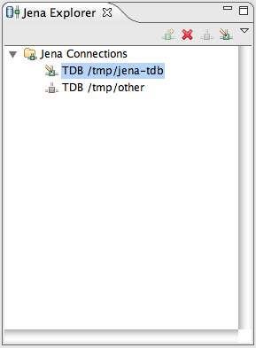
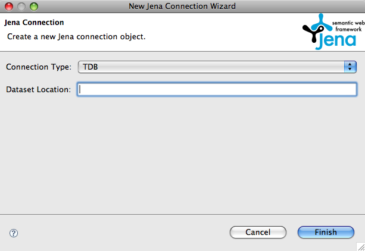

Jena is able to persist RDF data into stores using a number of different mechanisms. These mechanisms include storing the data in an existing relational database (the so-called RDB and SDB stores) and in an optimized on-disk form (TDB). It is also possible to create entirely in-memory stores that have no persistence, but the focus of this topic is on managing the connections to persistent stores. Stores are important as you can create different stores to contain different test data, importing RDF content into the stores and persisting them and even sharing them among a team. Queries, likewise, can be developed and shared and then run against a store to test both function and performance.
To start with then you familiarize yourself with the Jena Explorer View (shown below) which lists all the known connections. The view provides actions for creating a new connection, setting the default connection and for closing and deleting connections. Connections are opened automatically by the tool whenever needed and are held open until either manually closed or until Eclipse is terminated.

Creating a new connection is performed by clicking on the New Connection
action on either the toolbar or from the context menu associated with the
connection folder in the view. The following shows the New Connection
wizard for a Jena TDB connection, basically all you need to do is provide
a directory location and hit Finish.

If you enter the path of an existing file the wizard will respond with an error message, a TDB location must identify a directory and not a file. If you enter a path that does not exist the wizard will prompt you to create a new TDB store at the given location.